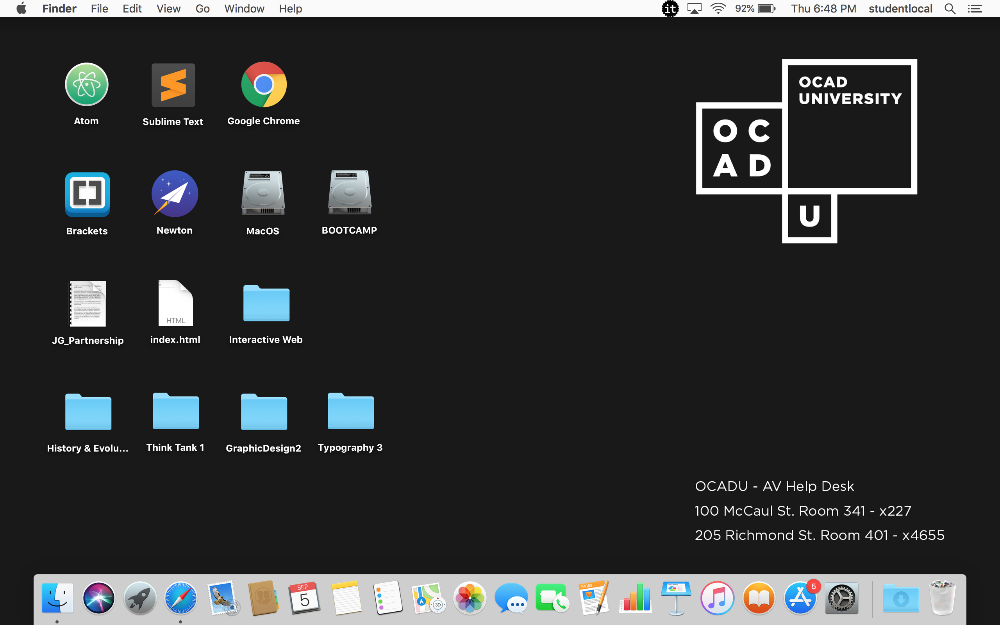

Here's my Tableau 1 exercise
click on the image to open a full-screen version

The following are the attributes about me, the desktop-tableau-1 self-portrait represents:
- The letter R, strategically made through the use of icons, spaces and a visual grid on the desktop, based on the pre-existing elements on the desktop.
- The idea of a flush-left, pleasantly uneven rag because I am a graphic design student and love editorial design, so I pay attention to all details.
- The concept of making the best from whatever I have. Since this laptop is not mine, neither the desktop background or all of the pre-existing icons.